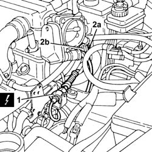
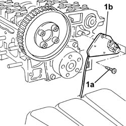

1056B51 cam angle sensor r + r
- Path
- Procedures > 10 ENGINE > 1056 PETROL INJECTION SYSTEM > 1056B multi-point injection system (mpi) > 1056B51 cam angle sensor r + r
- Kind
- repair procedure (removal / refitting; the operation number is the code)
- Applies to
- engines: 1.6 TS , 1.8 TS, 2.5 V6, 3.2 V6; all production periods
- Interactive page
- https://sloeber94.github.io/elrnDB-a156/en/#/3237537
Applies to: engines: 2.5 V6, 3.2 V6; all production periods
 Removing
Removing
 Refitting
Refitting1048A34 sleeve(s) from flow meter to air supply capacity case - r + r
1. Disconnect the electrical connection for the cam angle sensor.
 | Name | Connector |
|---|---|---|
1 | Timing sensor |
2. Undo bolt (2a) and remove cam angle sensor (2b) from the right hand cylinder head.

Applies to: engines: 2.5 V6, 3.2 V6; all production periods
Refitting
RemovingFit the cam angle sensor and secure to the right cylinder head using the bolt.
Connect the electrical connection for the cam angle sensor.
1048A34 sleeve(s) from flow meter to air supply capacity case - r + r
Applies to: engines: 1.6 TS , 1.8 TS; all production periods
Removing
RefittingPlace the car on a hoist.
Disconnect the negative battery terminal.
| Name | Connector |
|---|---|---|
- | Battery |
Follow these operations:
4450B10 Front WHEEL (one) - R.R.
1092G10 single engine belt r r
1092A10 Crankshaft services PULLEY - R.R.
1016A20 single cam cover - r + r and replace gasket
Applies to: engines: 1.6 TS , 1.8 TS; all production periods
1. Unscrew screws (1a) and remove sensor (1b).

Applies to: engines: 1.6 TS , 1.8 TS; all production periods
Refitting
RemovingAssemble the timing sensor.
1032B52 toothed driven pulley (one) - r + r
1032D12 timing system protective cover(s) - r + r
1016A20 single cam cover - r + r and replace gasket
1092A10 Crankshaft services PULLEY - R.R.
1092G10 single engine belt r r
4450B10 Front WHEEL (one) - R.R.
Connect the negative battery sensor.
Topics linked from this page (11)
- 1016A20 single cam cover - r + r and replace gasket
- 1032B14 toothed timing belt - r + r for timing adjustment or replacement versions with air conditioner
- 1032B52 toothed driven pulley (one) - r + r
- 1032D12 timing system protective cover(s) - r + r
- 1048A34 sleeve(s) from flow meter to air supply capacity case - r + r
- 1092A10 Crankshaft services PULLEY - R.R.
- 1092G10 single engine belt r r
- 4450B10 Front WHEEL (one) - R.R.
- 5530B10 battery - r+r
- A1 Battery
- K47 Timing sensor